Композиция
Расположение объектов, планов и элементов. Включает в себя:
- Ракурс
- Освещение
- Ди�станция до объекта
- Размеры и формы объектов
- Цвет
Задача композиции - создать изображение, которое формирует особое настроение, восприятие.
Простые
Симметрия

Человеку подсознательно нравиться всё симметричное. Нечётное кол-во симметричных элементов воспринимается лучше.
Отражение от воды, стекла и т. д. можно использовать как симметрию.
Диагональ

Размещение главного объекта вдоль диагональной линии
Правило третей

Основной объект располагается вдоль воображаемых линий, которые делят изображение на трети по горизонтали и вертикали, либо в точках пересечения этих линий
Центрирование

Главный объект помещают в центр, так как это максимальный якорь внимания.
Контраст

Выделение цветом
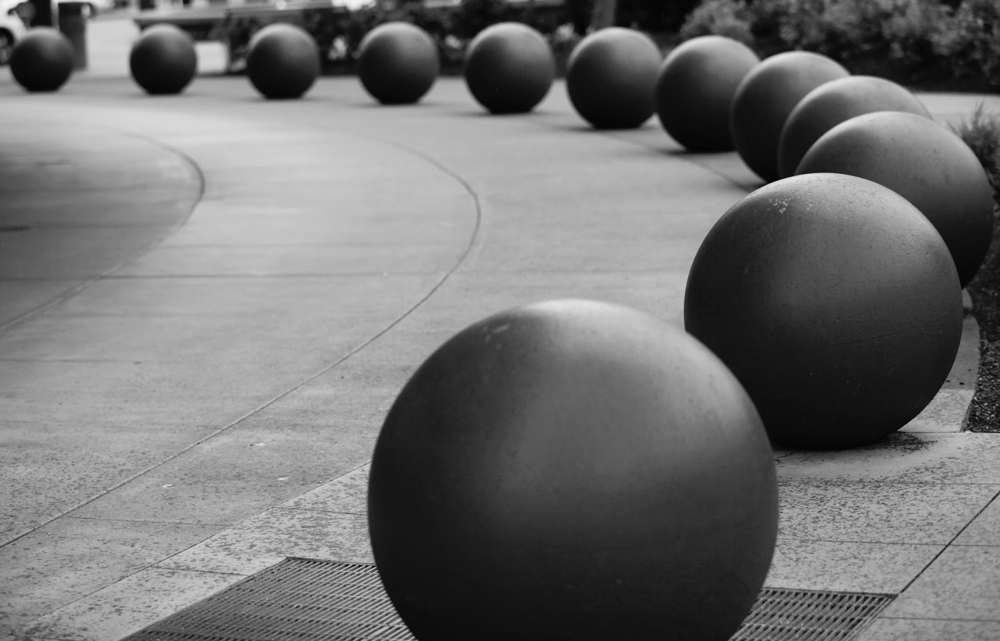Выделение размером
Фокус

Объекты в фокусе привлекают внимание.
Ракурс

Пример фото с нижнего ракурса.
Сложные
Слоистость и глубина (передний /средний /задний план)
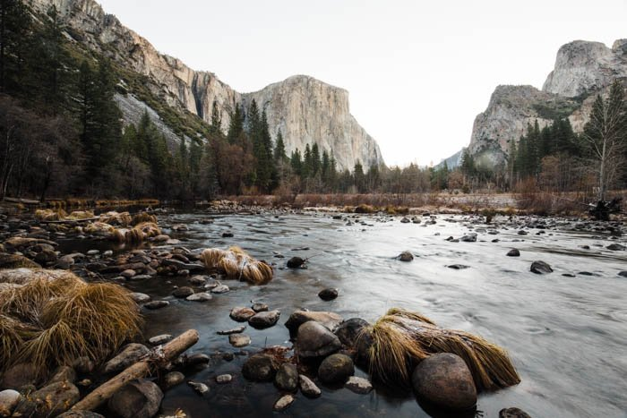Передний, средний и задний планы. Широко используется в пейзажной фотографии.
Направляющие линии и перспектива

Могут быть прямыми или кривыми.
Рамка (фрейминг, обрамление)

Рамка из различных элементов композиции вокруг главного объекта в кадре.
Ритм и повторение (повторяющиеся объекты/узоры, паттерны)
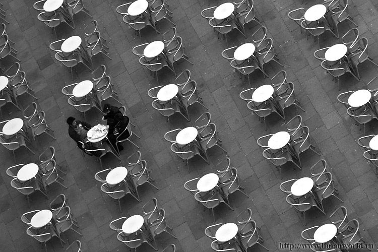Повторяющиеся объекты в кадре. Порядок человеком хорошо воспринимается. Для привлечения внимание можно использовать какое-нибудь нарушение в структуре паттерна как на этом фото.
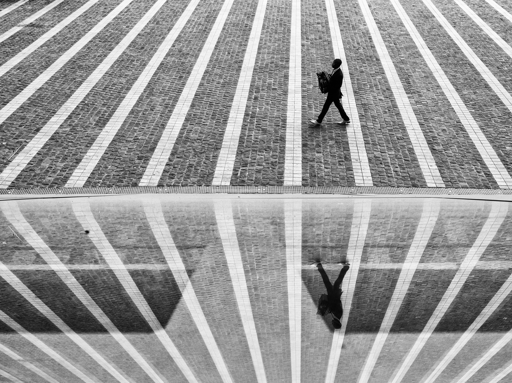Можно также комбинировать несколько композиционных приёмов
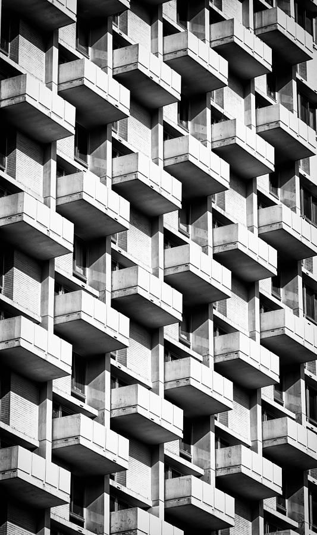Можно просто ловить повторение как фон, даже без нарушений некоторые паттерны уже будут смотреться интересно.
Равновесие в кадре
 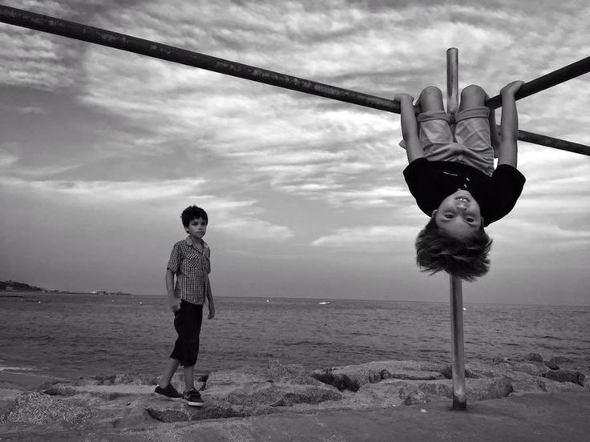
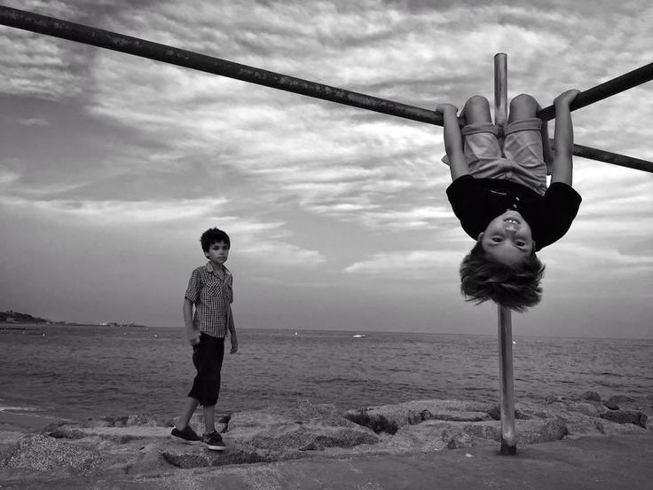
Дополнительный элемент как бы уравновешивает главный элемент кадра.
Золотое сечение
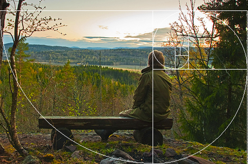
Композиция выстраивается �вокруг спирали

Золотые треугольники.
Пространство
Негативное пространство (объект + пустота вокруг). Минимализм. Ощущение воздуха.
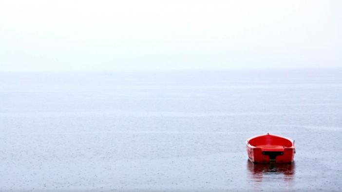 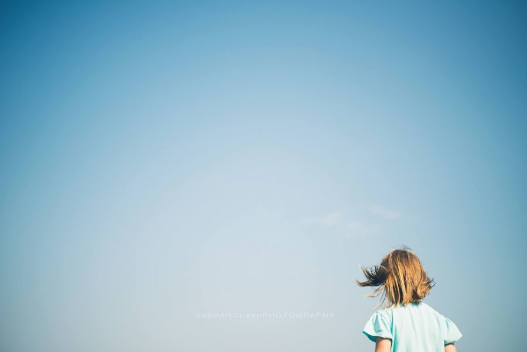Геометрические правильные фигуры
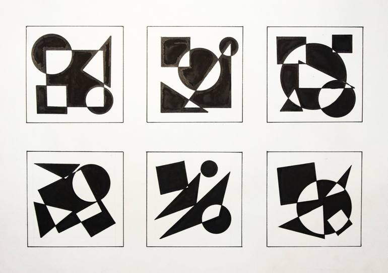Треугольники, круги, овалы, квадраты, прямоугольники. Когда в композиции присутствуют такие правильные геометрические фигуры. Пришло с художественных школ.